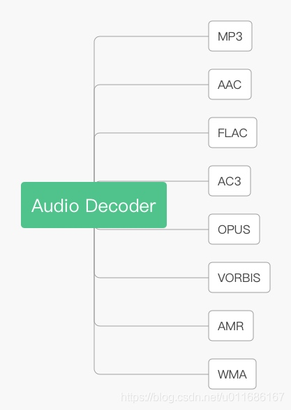
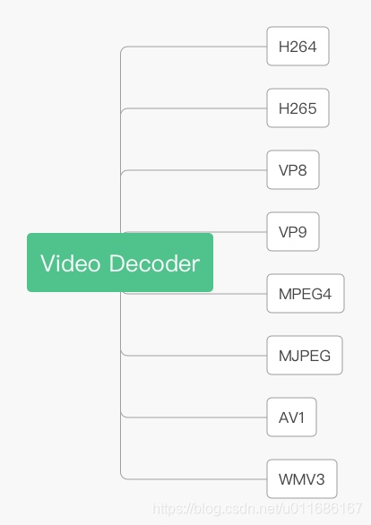
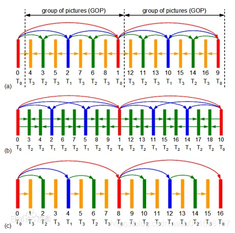
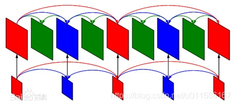
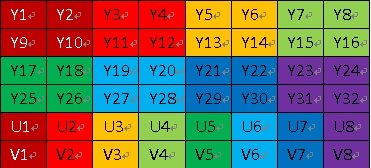
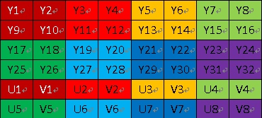

音视频流是通过特定编码器压缩，由一系列的压缩图像/语音帧组成。当然可能存在多种语言多音轨，每个音轨之间的音频流相互独立。还可能存在内置字幕，常见的字幕格式有sub、smi、ssa、srt等。但是，本篇文章讨论的主角是音视频编码，常见的视频编码有h264、h265、vp9、mpeg4、mjpeg、wmv3、av1(Alliance for Open Media Video 1，由开放媒体联盟推出，对标h265，旨在成为下一代视频编码技术标准)，常见的音频编码有mp3、aac、amr_nb、amr_wb、ac3、vorbis、opus、flac、wmav2等等。音视频格式如下图所示：


视频编码
为什么要进行视频编码？因为原始YUV数据非常大，而RGB数据更加大，所以需要进行编码。又为什么能够进行视频编码呢？因为视频的图像序列存在时间和空间上的数据冗余，所以能够编码压缩。又怎么样去做视频编码呢？一般步骤是从变换量化、到运动估计运动补偿、最后是编码。
变换与量化
变换：把空间域的图像信号变换到频率域。常见的变换有离散余弦变换、傅里叶变换。其中，离散余弦变换又称为DCT变换，在视频压缩中得到广泛应用。
量化：人类对图像的低频特性的信息敏感(比如亮度)，对高频特性的信息不敏感(比如色度、对比度)，所以才编码过程中可以少用高频信息，全保留低频信息。量化过程是对低频区进行细量化，对高频区进行粗量化，减少人眼不太敏感的图像信息，从而减小数据量、提高压缩率。量化是有损的，量化参数(Quantization Parameter)越大，图像质量越低。
运动补偿与运动估计
运动估计：把图像分割成互不重叠的子块，然后以一定大小的窗口，在前一图像或后一图像去移动搜索相似的图像块，这个搜索过程称为运动估计。
运动补偿：通过先前的局部图像来预测、补偿当前的局部图像。
熵编码
熵编码是基于变长编码，出现概率大的符号采用短码，出现概率小的符号采用长码，最终的平均码长接近信源熵值。其他的变长编码还包括：哈夫曼编码、游程编码、算术编码等。
帧内压缩与帧间压缩
帧内压缩：每帧图像内部存在数据冗余。比如一副图像中有一块颜色相同的画布，编码时按照nxn大小的宏块进行划分，那么宏块之间存在相似性，这就使得可以从空间层面进行压缩，即帧内压缩。
帧间压缩：连续图像之间存在许多相似细节。比如一辆运动中的汽车，从当前时刻到下一时刻发生相对位移，从另外一个角度来说，是周边环境发生相对位移而汽车本身没有变化，这就使得可以从时间层面进行压缩，即帧间压缩。
I帧、P帧、B帧
I帧：内部编码帧，又称为关键帧，使用I帧编码可以完整还原一副图像，帧的数据量会比较大；
P帧：前向预测帧，又称为前向参考帧，需要参考前一个I帧进行编码，数据量会比I帧小。同理，解码时也需要参考前一个I帧进行解码；
B帧：双向内插帧，又称为双向参考帧，需要参考前后的I帧或P帧进行编码，压缩率会比P帧更高，数据量比P帧更小。但是，解码时需要下一个I帧或者P帧的到来，解码时序需要严格控制，解码复杂度也相对高。
GOP与关键帧间隔
GOP(全称Group Of Pictures)，图像序列组，由一个关键帧和若干个非关键帧组成。在编码器参数设置中，有一个参数设置GOP大小。以Android的mediacodec为例，设置关键帧间隔时间Key_Frame_Interval，也就是设置多少秒来一个关键帧。另外有一个类似的参数，关键帧间隔：多少帧来一个关键帧。
码率控制
码率控制，是指网络请求码流时，根据网络带宽状况来控制码率大小。分为五种控制方式：恒定码率、动态码率、平均码率、恒定质量因子、恒定量化参数。而Youtube请求网络流时，会根据网络拥挤程度来动态调整码率，得益于一种新的多媒体传输控制协议——DASH，全称为Danymic Adaptive Streaming over HTTP，即基于HTTP的动态自适应媒体流。接下来对码率控制方式进行展开分析。
- 恒定码率：CBR(Constant Bitrate)，以恒定的码率去编码，波动小，编码质量欠佳；
- 动态码率：VBR(Variable Bitrate)，以动态的码率去编码，波动大，编码质量比较稳定；
- 平均码率：ABR(Average Bitrate)，以平均的码率去编码，编码质量参差不齐；
- 恒定质量因子：CQF(Constant Quality Factor)，又称为CRF(Constant Rate Factor)，在x264和x265编码默认采用CRF，取值范围为[0,51]，数值越大表示视频压缩率越高，编码质量越低；
- 恒定量化参数：CQP(Constant Quantization Parameter)，瞬时码率会随场景复杂度有所波动，在H264定义的QP范围为[0,51]，数值越大表示量化步长越大，编码质量越低。当为QP=0时，表示无损编码。
SVC分级编码
SVC(全称Scalable Video Coding)，可扩展的视频编码，也称为分级编码。具有三大特性：时间可分级、空间可分级、质量可分级。
时间可分级：分为T0、T1、T2、T3，用来设置帧率，丢弃棕、绿、蓝得到不同帧率。如下图所示：

空间可分级：层级越低，分辨率越小，用来设置分辨率。如下图所示：

质量可分级：可以从码流提取不同图像质量的子码流。
应用领域：视频监控、流媒体直播、视频会议。
优点：分级码流应用灵活，一次编码多次使用，可得到不同帧率、分辨率、质量；
缺点：分级码流的解码复杂度增加，比单层码流的压缩率低10%左右；
YUV
视频压缩编码后，是以YUV格式进行存储的，Y代表亮度(Chroma)，U代表色度(Luma)，V代表对比度(Contrast)。常见的YUV排列格式有YUV444、YUV422、YUV420，区别如下表所示：
| YUV444 | 每组Y对应一组UV |
|---|---|
| YUV422 | 每两组Y公用一组UV |
| YUV420 | 每四组Y公用一组UV |
YUV420分为YUV420P和YUV420SP。其中，YUV420P又称为I420，P代表Planar平面，按照Y、U、V顺序排列，存储结构如下图所示：

而YUV420SP，其中SP代表Semi Planar半独立平面，U和V是交错存储的，存储结构如下图所示：

音频编码
人类的听觉范围为20Hz~20KHz，那么低于20Hz或者高于20KHz，这些低频或高频信号基本听不到，可以作为冗余数据，通过特定采样率进行采样、编码。
采样率
采样率描述的是每秒对原始声音信号的采样次数，常见的采样率8000Hz、16000Hz、44100Hz、48000Hz，目前使用最广泛的是44100Hz，即44.1KHz。
波形编码
直接把时域信号转换为数字编码，不利用任何参数，使得重构后的波形与原始信号的波形形状尽可能保持一致。基本原理是在时间轴对模拟语音信号按照一定速率采样，然后把幅度样本量化，并用代码表示。
参数编码
从语音波形信号中提取生成语音的参数，使用这些参数通过语音生成模型重构出语音。音质比较低，但是保密性良好，广泛应用于军事技术中，典型的参数编码为LPC(Linear Predictive Coding)。
混合编码
混合编码是指采用两种以上编码技术，比如波形编码与参数编码结合，形成优势互补。
PCM
PCM(Pulse Code Modulation 脉冲编码调制)，是对连续变化的模型信号抽样、量化、编码的过程，最终转换为数字信号。